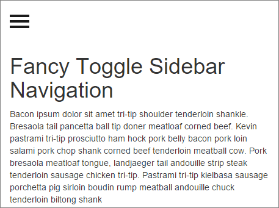
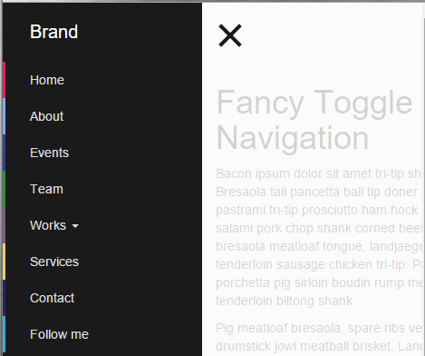

注意喔，這裡是講SideBar(側邊欄)不是講SlideBar(滑塊)喔，別搞錯。
我在網路上有看到一款中規中矩但又有點變化的Fancy Sidebar Navigation，
我很喜歡，所以我想了解他大概是如何做的。
側邊欄按鈕前為下列close樣式
按鈕後為下列open樣式
要如何做到呢?
一、SideBar以Bootstrap為基底
以下是之前所學到的navbar範例
<!DOCTYPE html> <html> <head> <meta charset="utf-8"> <meta http-equiv="X-UA-Compatible" content="IE=edge"> <meta name="viewport" content="width=device-width, initial-scale=1"> <title>Bootstrap Template</title> <link rel="stylesheet" href="https://maxcdn.bootstrapcdn.com/bootstrap/3.3.6/css/bootstrap.min.css" integrity="sha384-1q8mTJOASx8j1Au+a5WDVnPi2lkFfwwEAa8hDDdjZlpLegxhjVME1fgjWPGmkzs7" crossorigin="anonymous"> <link rel="stylesheet" href="https://maxcdn.bootstrapcdn.com/bootstrap/3.3.6/css/bootstrap-theme.min.css" integrity="sha384-fLW2N01lMqjakBkx3l/M9EahuwpSfeNvV63J5ezn3uZzapT0u7EYsXMjQV+0En5r" crossorigin="anonymous"> </head> <body> <nav class="navbar navbar-default" role="navigation"> <div class="navbar-header"> <button type="button" class="navbar-toggle collapsed" data-toggle="collapse" data-target="#bs-example-navbar-collapse-1"> <span class="sr-only">Toggle navigation</span> <span class="icon-bar"></span> <span class="icon-bar"></span> <span class="icon-bar"></span> </button> <a class="navbar-brand" href="#">Brand</a> </div> <div class="collapse navbar-collapse" id="bs-example-navbar-collapse-1"> <p class="navbar-text">當寬度小於768px就會隱藏</p> </div> </nav> <script src="https://ajax.googleapis.com/ajax/libs/jquery/1.11.3/jquery.min.js"></script> <script src="https://maxcdn.bootstrapcdn.com/bootstrap/3.3.6/js/bootstrap.min.js" integrity="sha384-0mSbJDEHialfmuBBQP6A4Qrprq5OVfW37PRR3j5ELqxss1yVqOtnepnHVP9aJ7xS" crossorigin="anonymous"></script> </body> </html>
其實Fancy Sidebar Navigation的範例是以Bootstrap為基底，
但已有相當程度的改寫，所以公版Bootstrap的navbar範例只可參考。
二、分析
1、決定HTML骨架
<!DOCTYPE html> <html> <head> <meta charset="utf-8"> <title>JS Bin</title> <link rel="stylesheet" href="http://maxcdn.bootstrapcdn.com/bootstrap/3.3.0/css/bootstrap.min.css"> <link href="sidebar.css" rel="stylesheet" /> </head> <body> <div id="wrapper"> <div class="overlay"></div> <!-- Sidebar --> <nav class="navbar navbar-inverse navbar-fixed-top" id="sidebar-wrapper" role="navigation"> </nav> <!-- /#sidebar-wrapper --> <!-- Page Content --> <div id="page-content-wrapper"> </div> <!-- /#page-content-wrapper --> </div> <!-- /#wrapper --> <script src="https://ajax.googleapis.com/ajax/libs/jquery/1.11.1/jquery.min.js"></script> <script src="http://maxcdn.bootstrapcdn.com/bootstrap/3.2.0/js/bootstrap.min.js"></script> <script src="sidebar.js"></script> </body> </html>
要做sidebar會需要一些重要的標籤如：id="wrapper"、
id="sidebar-wrapper"、id="page-content-wrapper"
對了，忘了提重要的一點，就是有關於sidebar控制按鈕(漢堡包)的製作，
<div id="page-content-wrapper"> <button type="button" class="hamburger is-closed" data-toggle="offcanvas"> <span class="hamb-top"></span> <span class="hamb-middle"></span> <span class="hamb-bottom"></span> </button> </div>
預設是關閉，他可以控制sidebar的重要開關。
2、再利用css控制版型顯示位置
其原理為新增一個close樣式與一個open樣式，
不過這裡只提sidebar展開前與sidebar展開後位置的變化。
#wrapper { padding-left: 0; -webkit-transition: all 0.5s ease; -moz-transition: all 0.5s ease; -o-transition: all 0.5s ease; transition: all 0.5s ease; } #wrapper.toggled { padding-left: 220px; } #wrapper.toggled #sidebar-wrapper { /*toggled時寬度由零變到220*/ width: 220px; } #sidebar-wrapper { z-index: 1000; left: 220px; width: 0; height: 100%; margin-left: -220px; overflow-y: auto; overflow-x: hidden; background: #1a1a1a; -webkit-transition: all 0.5s ease; -moz-transition: all 0.5s ease; -o-transition: all 0.5s ease; transition: all 0.5s ease; } #wrapper.toggled #page-content-wrapper { position: absolute; /*已有#wrapper的padding-left: 220px;margin-right可不加*/ margin-right: -220px; } #sidebar-wrapper::-webkit-scrollbar { display: none; } #page-content-wrapper { width: 100%; padding-top: 70px; }
3、再決定當滑鼠按下時所要觸動的javascript事件
撰寫滑鼠點選後要切到哪一個class
$(document).ready(function () {
var trigger = $('.hamburger'),
overlay = $('.overlay'),
isClosed = false;
trigger.click(function () {
hamburger_cross();
});
function hamburger_cross() {
if (isClosed === true) {
overlay.hide();
trigger.removeClass('is-open');
trigger.addClass('is-closed');
isClosed = false;
} else {
overlay.show();
trigger.removeClass('is-closed');
trigger.addClass('is-open');
isClosed = true;
}
}
$('[data-toggle="offcanvas"]').click(function () {
$('#wrapper').toggleClass('toggled');
});
});
參考資料：